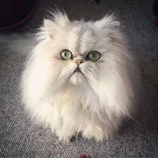

The Persian cat is a long-haired breed of cat characterized by its round face and short muzzle. It is also known as the "Persian Longhair" in the English-speaking countries. In the Middle East, region they are widely known as "Iranian cat" and in Iran they are known as "Shirazi cat".
 Back